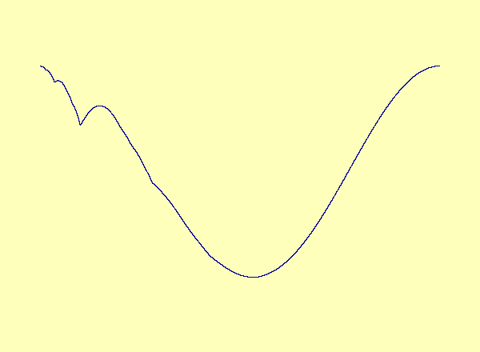
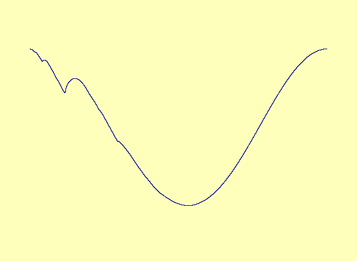
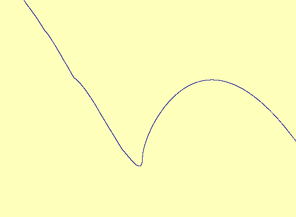

Evelyn Sander, Ernest Barreto, Kresimir Josic, and Paul So.
A recent article in Chaos [Barreto et al.] describes a drive-response system coupling a parametrized family of noninvertible modified baker maps with a nonlinear response. The article describes the effect of noninvertibility on the synchronization set (i.e. the attractor). Namely, at the bifurcation parameter, the syncronization set has a cusp. For every parameter after the bifurcation, there is a multivalued synchronization set with self-intersections, or loops. See Animation 1. This example is a special case in which the noninvertibility occurs at a critical point of the synchronization set. In contrast, the synchronization set generically continues to be a smooth nonintersecting curve even after the onset of noninvertibility. See Animation 2a and 2b. This is described more fully in an upcoming article by Josic and Sander.
E. Barreto, K. Josic, C. Morales, E. Sander, and P. So. The geometry of chaos synchronization. Chaos, 13(1):151-164, 2003.
K. Josic and E. Sander, Invariant graphs over noninvertible systems. In preparation, 2003.

Caption 1: u versus y in the exceptional case of
Barreto et al., as the parameter varies, a smooth manifold forms a
cusp, which turns into a loop.

Caption 2a: u versus y in the typical case; the
noninvertibility does not occur at a critical point. Therefore the
synchronization set becomes multivalued as a graph but retains its
smooth manifold structure.

Caption 2b: A closeup view of the main loop in 2a.